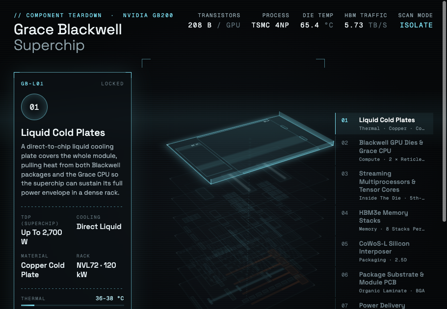

Selected work in design, research, and interactive media.
Each project opens directly in the browser. New work is added as it is completed.
Projects

Related Digital · Cheyenne, Wyoming Campus
An infrastructure atlas of a data center campus under construction: power, compute, network, cooling, security, and community, documented from public sources.
Open Atlas →
Microsoft Azure · Cheyenne, Wyoming Campuses
Four operating and under-construction campuses, the Black Hills Energy tariff, backup generation permits, evaporative cooling, and the 3,200-acre expansion, from public sources.
Open Atlas →
NVIDIA GB200 · Grace Blackwell Superchip
An exploded, layer-by-layer teardown of the GB200 module: Blackwell dies, HBM3e, CoWoS-L interposer, substrate, power delivery and NVLink 5, with live thermal readouts.
Open Teardown →